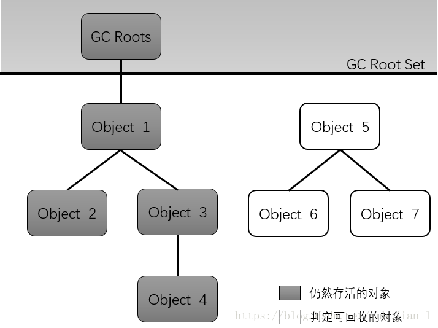
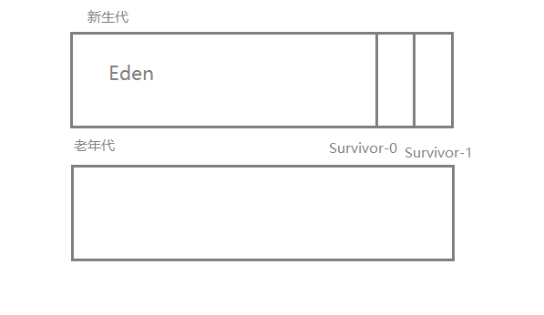
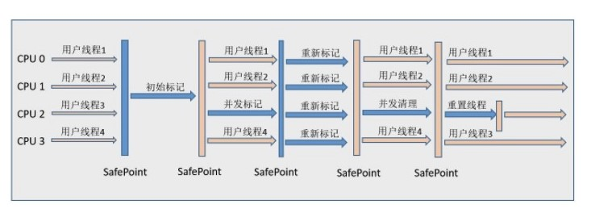
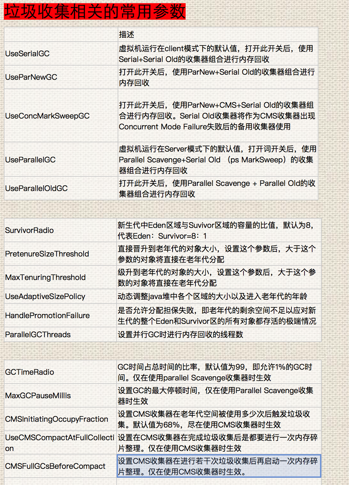

对象已死吗（GC回收的前提是判断对象已死）
概述：对于程序计数器、虚拟机栈、本地方法栈，其内存区域和回收都具备确定性，方法结束或线程结束时，其内存自然就回收了。GC主要关注堆和方法区的分配与回收。
引用计数算法（不常用）：给对象添加一个引用计数器，每当被引用时，计数器值+1；引用失效（引用不再指向该对象）时，计数器值-1。任何时刻计数器为0的对象就是不可能再被使用的。缺点：难以解决对象之间相互循环使用的问题。（比如对象A中的引用指向B，对象B中的引用指向A，对象A、B计数器永远为1）
可达性分析算法（主流实现）：通过一系列的称为“GC Roots”的对象作为起始点向下搜索，搜索走过的路径称为“引用链”，当一个对象到“GC Roots”没有任何引用链相连，即证明对象不可达。

可作为GC Roots的对象包括：
- 虚拟机栈：栈帧中局部变量表中引用的对象
- 方法区：
- 类静态变量引用的对象
- 常量引用的对象
- 本地方法栈：JNI引用的对象
再谈引用：JDK1.2之后，引用概念分为以下4种，强度依次减弱
- 强引用：类似“Object obj = new Object()”这类引用，只要强引用存在，GC永远不会回收被引用的对象。
- 软引用：描述有用但非必须的对象，当系统将要发生OOM异常时，软引用指向的对象才被真正回收。通过SoftReference类实现。
- 弱引用：GC工作时，无论当前内存是否足够，都会回收只被弱引用关联的对象。通过WeakReference类实现。
- 虚引用：为一个对象设置虚引用关联的唯一目的时能在对象被回收时收到一个系统通知。通过PhantomReference类实现。
生存还是死亡：即使在可达性分析算法中不可达的对象，在该对象的finalize()方法中也有一次自救的方法，即重新与引用链上的任何一个对象建立关联即可，譬如把this赋值给某个类变量或者对象的成员变量。但是，建议使用try-finally语法而尽量不使用finally()方法。
回收方法区：主要回收废弃常量和无用的类。废弃常量的回收与堆中的对象类似，而无用类的判定则要复杂的多，需要满足：
- 堆中不存在该类的实例
- ClassLoader已被回收
- Class对象没有被引用，且无法在任何地方通过反射访问该类的方法。
- 是否对类进行回收，HotSpot虚拟机提供了
-Xnoclassgc参数进行控制，还可以使用-verbose:class以及-XX:+TraceClassLoading、-XX:+TraceClassUnLoading查看类加载和卸载信息。 - 注：对于大量使用反射、动态代理、CGLib等ByteCode框架的场景，要注意方法区的类卸载。
垃圾收集算法
标记-清除算法：标记回收对象，标记完成后统一回收。

- 缺点：标记和清除效率都不高；会产生大量不连续的内存碎片，导致无法给大对象分配内存。
标记-整理算法：标记回收对象，让所有存活的对象向一端移动，然后直接清理掉对象所在的连续内存后的所有内存。

- 特点：适用于老年代的算法，不会产生内存碎片。
复制算法：对于现在的商业虚拟机，堆内存被划分为三块，一块较大的Eden空间、两块较小的Survivor空间。
当Eden空间满时，第一次Minor-GC（针对新生代的GC）将Eden还存活的对象全部复制到Survivor-0中，存活对象“寿命计数器”+1，清理Eden；
当Eden满时，第二次Minor-GC将Eden和Survivor-0中还存活的对象复制到Survivor-1中，存活对象“寿命计数器”+1，清理Eden和Survivor-0；
当Eden满时，第三次Minor-GC将Eden和Survivor-1中还存活的对象复制到Survivor-0中，存活对象“寿命计数器”+1，清理Eden和Survivor-1；
…….
如此往复，当某个Survivor满或者对象“寿命计数器”值达到阈值，则将对象复制到老年代中。
当老年代和新生代都满时，会进行一次Full-GC。
HotSpot虚拟机的Eden和Survivor大小默认比例为8:1，保证了内存利用率达到90%。

分代收集算法：现在的商业虚拟机采用分代收集算法。
- 新生代：由于每次GC时都有绝大部分对象死去，只有少量对象存活，故采用复制算法，因为只需要付出少量存活对象的复制成本。
- 老年代：由于老年代对象存活率高且没有额外空间对它分配担保，故采用标记-整理算法或标记-清除算法。
垃圾收集器

以上是HotSpot虚拟机中的7个垃圾收集器，连线表示垃圾收集器之间可以搭配使用。
Serial收集器：单线程；简单高效，拥有最高的单线程收集效率；Client场景下的默认新生代收集器。

ParNew收集器：Serial的多线程版本；Server场景下默认的新生代收集器；唯一能与CMS收集器配合使用的收集器。

Parallel Scavenge收集器：多线程，吞吐量（CPU运行用户代码的时间除以CPU总消耗时间）优先的收集器。
Serial Old收集器：Serial的老年代版本，Client场景使用。
Parallel Old收集器：Parallel Scavenge的老年代版本

CMS(Concurrent Mark Sweep)收集器：以获取最短回收停顿时间为目标，基于标记-清除算法。分为四个阶段：
- 初始标记：只标记与GC Roots直接关联的对象，需要Stop The World。
- 并发标记：进行 GC Roots Tracing，耗时最长，不需要停顿。
- 重新标记：修正并发标记期间因用户程序继续运作而导致标记产生变动的那一部分对象的标记记录，需要Stop The World。
- 并发清除：不需要停顿。

- 缺点明显：
- CPU资源敏感：CMS默认启动的回收线程数是（CPU数+3）/4，当CPU数较少时，吞吐量很低。
- 无法处理浮动垃圾：浮动垃圾是指并发清除阶段由于用户线程继续运行而产生的垃圾，这部分垃圾只能下一次GC清除。
- 标记-清除算法会产生大量空间碎片。
- 总体上来说，CMS的垃圾回收过程是与用户线程一起并发执行的。
G1(Garbage First)收集器：面向服务端应用。
使用G1时，Java堆内存布局与以往不同，它将整个Java堆划分为多个大小相等的独立Region，新生代与老年代是一部分不连续Region的集合，如图：

G1通过记录每个Region垃圾回收时间和回收所得空间（这两个值通过过去回收的经验计算），并维护一个优先列表，每次根据用户允许的收集时间，优先回收价值最大的Region。使用Region划分内存空间，有优先级的区域回收方式，保证了G1在有限的时间内获取尽可能高的收集效率。
每个Region都维护一个Remembered Set，用于记录Region之间的对象引用，来避免GC时的全堆扫描。（其他收集器新生代与老年代之间的对象引用也是使用Remembered Set，避免Minor-GC时全堆扫描）。
如不计算维护Remembered Set的操作，G1的运作可划分如下：
- 初始标记：停顿。
- 并发标记
- 最终标记：停顿。为了修正在并发标记期间因用户程序继续运作而导致标记产生变动的那一部分标记记录，虚拟机将这段时间对象变化记录在线程的 Remembered Set Logs 里面，最终标记阶段需要把 Remembered Set Logs 的数据合并到 Remembered Set 中。
- 筛选回收：根据用户允许的收集时间和优先列表来回收。

- 总结G1的特点如下：
- 并行与并发：G1在多CPU和大内存的硬件优势下能有效缩短Stop-The-World的时间。
- 分代收集：新生代和老年代可以一起回收。
- 空间整合：整体上看基于“标记-整理”算法，局部上看基于“复制”算法。不会产生内存碎片。
- 可预测的停顿：能让用户自定义在一个长度为M毫秒的时间片段内，消耗在GC上的时间不超过N毫秒。
垃圾收集器参数总结

内存分配与回收策略
- 对象优先在Eden分配
- 大对象直接进入老年代：大对象是指需要连续内存空间的对象，最典型的大对象是那种很长的字符串以及数组。
- 经常出现大对象会提前触发垃圾收集以获取足够的连续空间分配给大对象。
- 通过参数
-XX:PretenureSizeThreshold，大于此值的对象直接在老年代分配，避免在 Eden 和 Survivor 之间的大量内存复制。
- 长期存活的对象将进入老年代：通过参数
-XX:MaxTenuringThreshold用来定义年龄的阈值。 - 动态对象年龄判定：虚拟机并不是永远要求对象的年龄必须达到 MaxTenuringThreshold 才能晋升老年代，如果在 Survivor 中相同年龄所有对象大小的总和大于 Survivor 空间的一半，则年龄大于或等于该年龄的对象可以直接进入老年代，无需等到 MaxTenuringThreshold 中要求的年龄。
- 空间分配担保：在发生 Minor GC 之前，虚拟机先检查老年代最大可用的连续空间是否大于新生代所有对象总空间，如果条件成立的话，那么 Minor GC 可以确认是安全的；如果不成立的话虚拟机会查看 HandlePromotionFailure 的值是否允许担保失败，如果允许那么就会继续检查老年代最大可用的连续空间是否大于历次晋升到老年代对象的平均大小，如果大于，将尝试着进行一次 Minor GC；如果小于，或者 HandlePromotionFailure 的值不允许冒险，那么就要进行一次 Full GC。
GC的触发条件
对于Minor GC，其触发条件为Eden区满时。而对于Full GC:
- 调用System.gc()。
- 老年代空间不足。
- 空间分配担保失败。
- Concurrent Mode Failure。
减少Full GC的方法：
- 尽量不要创建大对象和数组。
- 通过
-Xmn调大新生代大小。 - 通过
-XX:MaxTenuringThreshold调大进入老年代的阈值。